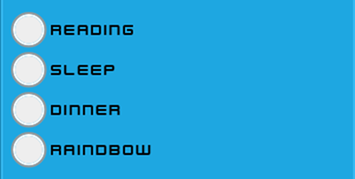
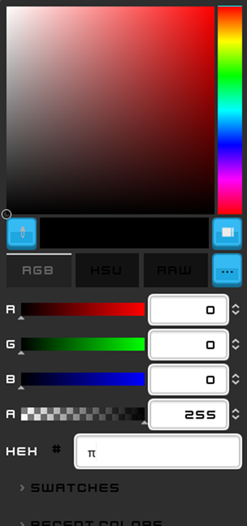
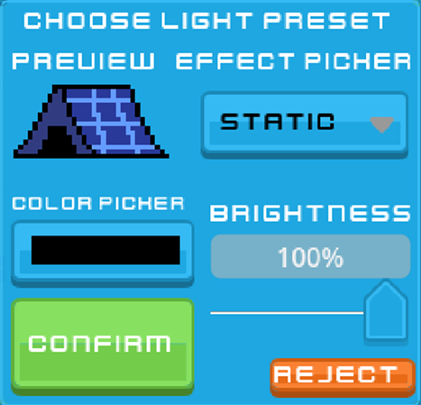
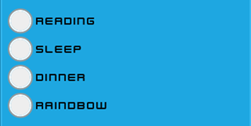
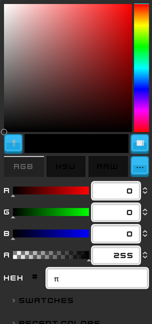
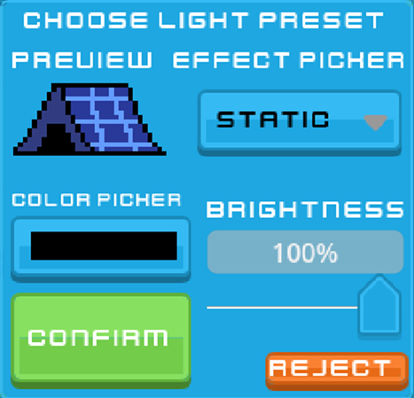

Smart Camping Companion Manual
Your ultimate guide to smarter camping!
1. Getting Started
- Step 1: Open the app and connect to the tent system.
- Step 2: Navigate the interface to select a setup point.
- Step 3: Choose a spot based on soil stability, moisture, and sunlight.
- Step 4: Place stakes using the interactive guidance system.
- Step 5: Adjust lighting settings like color and intensity.
2. Semi-Automatic Tent Setup
- Use the picket menu to adjust angles and pressures for stakes.
- Confirm placement using visual indicators.
3. Tarp Placement
- Follow weather-based suggestions for tarp placement.
- Switch between manual and automatic placement modes.
4. Lighting Settings
- Toggle between lighting modes using the button interface.
- Choose preset or custom lighting effects.
- Adjust brightness and colors to match your preferences.
 





5. Energy Management
- Monitor energy levels and adjust saving modes.
- Choose from no saving, moderate saving, or full saving modes.
6. Notifications and Group Activities
- Get real-time weather updates.
- Receive alerts about group activities and RSVP directly.
7. Orders and Feedback
- Order food and drinks directly from the app.
- Provide feedback to campsite staff.
8. Navigation
- Use the labeled map to find locations like shelters, pools, and more.
- Follow GPS-guided routes to your destination.
9. Chat Support
- Access live chat support for any queries or issues.
- Tap the chat button to connect with a campsite staff member.